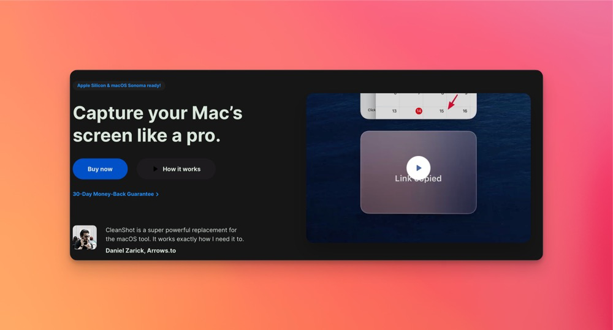

作为 Mac 用户，找到一款完美的截图和屏幕录制工具可能是一项艰巨的任务。 市面上有许多选择，从免费的基础工具到收费的高级软件，每种工具都有各自的优缺点。 But，在众多选择中，我认为没有一款能在功能丰富性、操作便捷性和整体用户体验上与 CleanShot X 相媲美。 (或许是我还没遇到[doge])， CleanShot X 以其独特的功能组合和卓越的用户界面设计，迅速赢得了广大用户的青睐。 本文我会简单说一下CleanShot X 的各项功能，它是如何满足并超越我对截图和屏幕录制工具的期望， 以及为什么它能够成为您日常工作和创作过程中不可或缺的一部分。
CleanShot X 提供了多种截图选项，你可以轻松捕捉：
整个屏幕
选定区域
特定窗口
滚动内容
这里有必要说一句，
特定窗口中可以自定义背景，也可以设置透明背景。
选定区域当然也可以，但是你需要截完编辑一下，就像这样：

CleanShot X 不仅是一款截图工具，它在屏幕录制方面也表现出色。 你可以选择录制整个屏幕或仅部分区域，甚至可以捕捉系统音频， 使其成为制作教程、演示文稿或记录游戏视频的理想选择。录制完成后，CleanShot X 提供了简单的编辑工具， 可以快速剪辑视频，去除不需要的部分，并直接从应用程序中分享。
截图后可以对图像进行进一步处理。包括高亮、模糊、添加文本、箭头和形状等，使您能够清晰有效地传达信息。 无论是为团队合作做注释，还是为演示文稿添加说明，这些功能都大大提高了截图的实用性。 通过这些直观的编辑工具，你可以轻松创建专业级的图像内容。
CleanShot X 内置了云存储功能，方便用户快速上传和分享截图和录制内容。 每个用户都有一定的免费云存储空间，可以将文件上传到云端，并获得一个分享链接， 轻松发送给同事或朋友。这对于需要经常分享内容的用户来说非常实用，
为了提升生产力，CleanShot X 可以所有功能设置自定义键盘快捷键。 我们可以根据自己的使用习惯，快速访问所需的截图或录制工具， 而不会打断我们的工作流程。这对于需要频繁使用截图工具的用户来说尤为重要。 通过这种个性化设置，CleanShot X 极大地提高了操作效率。
 Arkle
Arkle Gavin
Gavin 关于
关于 更多
更多